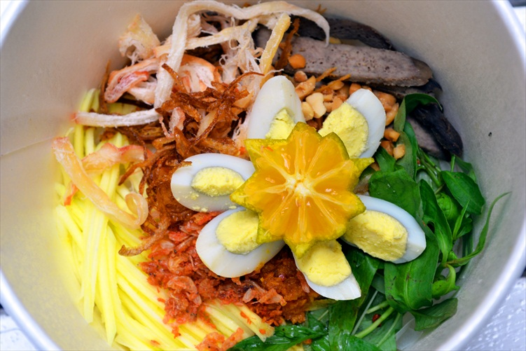
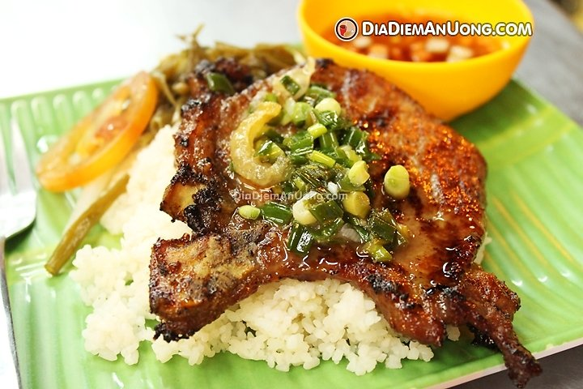
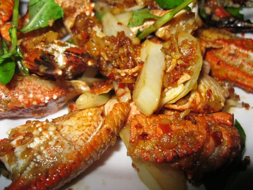
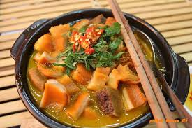
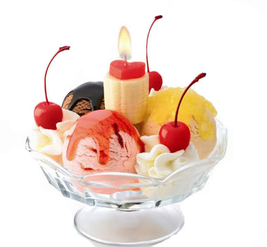
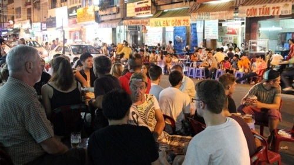
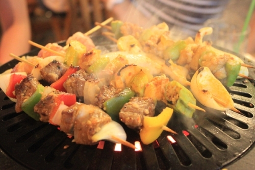
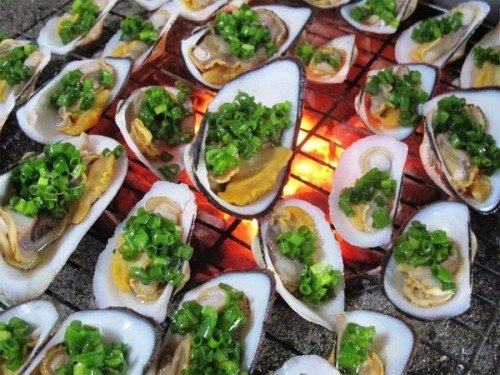

1.Bánh tráng trộn .
Bánh tráng trộn mới chỉ xuất hiện ở Sài Gòn hơn 10 năm nay. Giá cả món này hiện nay đa số là 10.000 đồng - 15.000đồng. Bịch bánh tráng cùng xoài xanh, khô bò, rau răm, trứng cút đã quá quen với ai đã và đang ở Sài Gòn, và là món ăn đường phố được nhiều người ưa thích, từ học sinh đến người đi làm. Bạn có thể ghé qua quán bánh tráng Chú Viên- 38 Nguyễn Thượng Hiền quận 3, Bánh tráng Cô Long 35 Nguyễn Thượng Hiền quận 3 hay trước cổng trường ĐH Kinh tế ở đường Nguyễn Tri Phương, bánh tráng khu vực Hồ Con Rùa.

2.Cơm tấm/Cơm sườn .
Cơm tấm là món ăn nức tiếng Sài Gòn, thời xa xưa chỉ giành cho người nghèo nhưng dần già nó trở thành món ăn được hầu khắp mọi người yêu thích từ những con hẻm bình dân đến các hàng quán tinh tươm. Chỉ là cơm với thịt nướng chan chút nước mắm nhưng đây là món không thể không ăn khi đến Sài Gòn, cũng như người Sài Gòn không bao giờ có thể ngán món này. Những quán cơm tấm ngon nức tiếng Sài Gòn là cơm tấm Huyền đường Đinh Tiên Hoàng, quán cơm tấm ở 114 Võ Thị Sáu, phừơng Tân Định, Q1 hay số 871 Phạm Thế Hiển P4 Q8, cơm tấm 261 Nguyễn Tri Phương, P.5, Q.10...
Nguồn Zing News

3.Các món ốc .
Ốc là món vừa ăn no , vừa ăn chơi của người Sài Gòn , một buổi tối vòng quanh đường phố Sài Gòn bạn có thể thưởng thức đủ loại ốc xào me , nghêu hấp xả hoặc hấp thái , sò điệp nướng phô mai , càng ghẹ rang muối ớt , sò lông nướng mỡ hành....Ốc Sài Gòn tươi ngon , nêm nếm đậm đà và ăn hoài không ngán . Bạn có thể tìm 1 quán ốc ở bất kỳ con hẻm , đường phố nào nơi đây .

4.Phá lấu .
Một món rất lạ và rất đặc biệt dường như chỉ có Sài Gòn là nơi người ta bán và ăn món này phổ biến nhất, và độ tuổi tiêu thụ món này nhiều nhất vẫn là các bạn học sinh phổ thông. Bạn có thể ăn phá lấu với bánh mì, hoặc mì gói hoặc độc hơn là phá lấu nướng hoặc chiên. Mì phá lấu ngon tầm 15.000 đồng đến 30.000 đồng. Bạn có thể ăn phá lấu ở phá lấu Xóm Chiếu, quận 4; bánh mì phá lấu nổi tiếng khu quận 4 nằm ngay ngã tư Hoàng Diệu và Lê Quốc Hưng.

5.Kem/Yogurt .
Kem đủ màu sắc, hương vị là món ăn rất phổ biến ở Sài Gòn. Người Sài Gòn thích kem để giải đi cái oi nóng, ngột ngạt nơi đường phố. Những quán kem ngon nằm ngay hồ con rùa, Kem tươi Khánh Như (Đinh Tiên Hòang Q.1) giá khá rẻ, hay số 30 Đồng Đen, P.14, Q.Tân Bình.

1.Khu phố ẩm thực đường Cô Giang (Quận 1)
Có lẽ khu phố ẩm thực đường Cô Giang gần khu phố Tây là nơi sở hữu những món ăn đường phố tốt nhất của du lịch Sài Gòn. Ngay trên góc đường Cô Giang và đường Đề Thám là một tập hợp những cửa hàng, quán ăn bày bán các món hủ tiếu, bánh canh và rất nhiều loài mỳ kiểu Trung Quốc.
Một địa chỉ ẩm thực thú vị dành cho bạn tại khu phố này là quán Hoàng Yến (số 121 đường Cô Giang), nơi đây không chỉ bán món bò lá sốt “siêu” ngon, mà giá vô cùng rẻ, chỉ với 20.000 đồng, bạn đã có ngay một phần ăn hấp dẫn.

2.Khu phố ẩm thực đường Phan Văn Hân (Quận Bình Thạnh) .
Khu phố ẩm thực đường Phan Văn Hân nằm gần khu vực sầm uất của quận 1, khu phố nhỏ bé và kín đáo này là điểm đến thường xuyên của các bạn sinh viên khi muốn thưởng thức các món ăn giá rẻ.
Bạn có thể thử món bột chiên nằm ngay góc đường Phan Văn Hân và Xô Viết Nghệ Tĩnh, nơi người bán có thâm niên bán suốt 20 năm. Ngoài ra, tiệm mỳ Lương Ký Mỳ Gia (số 1 đường Huỳnh Mẫn Đạt) nằm ở phía Đông của đường Phan Văn Hân, cũng là nơi bán món mì vịt tiềm ngon nức tiếng.

3.Khu phố ẩm thực đường Vĩnh Khánh (Quận 4) .
Trong quá khứ, đường Vĩnh Khánh quận 4 là một tụ điểm nổi tiếng của giới xã hội đen, trong đó nổi bật nhất phải kể đến chính là trùm xã hội đen Năm Cam, nhưng hiện nay nơi đây đã trở thành một thiên đường ăn uống, đặc biệt là món ốc. Thưởng thức các món ăn đường phố tại đây, bạn sẽ có dịp được thưởng thức “âm nhạc” miễn phí, đến từ những ca sỹ đường phố, bên những chiếc xe kẹo kéo.
Nổi tiếng nhất trong các quán ốc tại khu phố ẩm thực này là quán Ốc Oanh (số 534 đường Vĩnh Khánh), nổi bật nhất trong thực đơn tại quán là món ốc hương rang muối ớt và món sò điệp nướng mỡ hành.
Nếu các món hải sản không phải là món ăn yêu thích của bạn, thì quán BBQ Lúa (số 33 đường Vĩnh Khánh) sẽ cung cấp cho bạn vô số lựa chọn các món nướng như: Thịt bò, thịt lợn, dê và cá.
